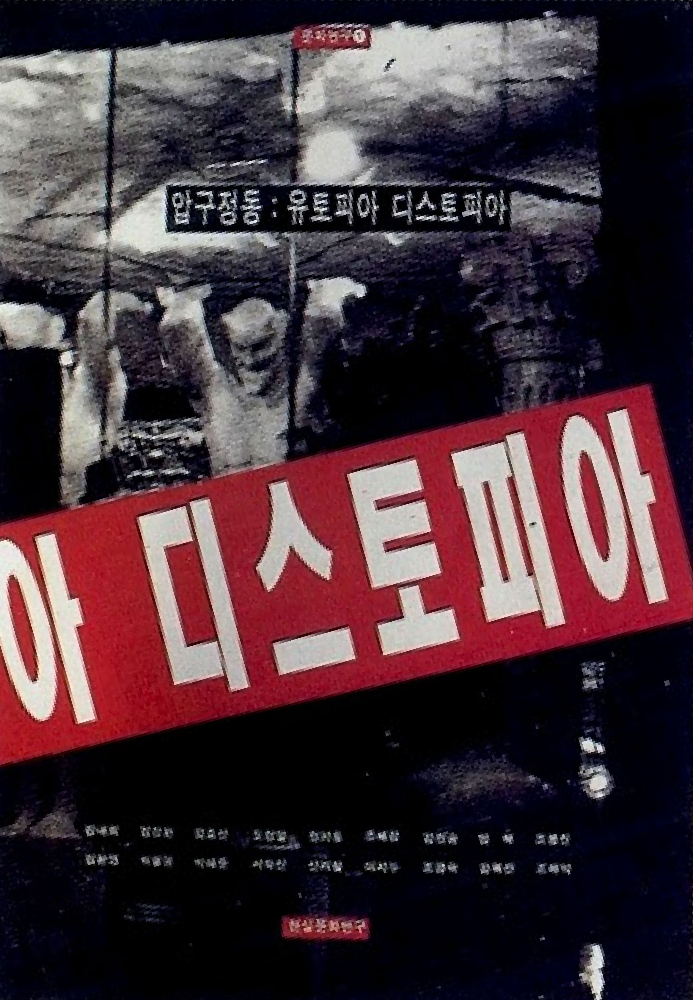

이 책
압구정동:유토피아 디스토피아 (1992)

출판사:현실문화연구
기획 참여: 강내희등 당대 문화예술인 및 디자이너 공동 기획
1990년대 초반 한국 자본주의와 소비문화의 메카였던 '압구정동'을 정면으로 해부한 기념비적인 문화 비평서입니다.이 책은 글 중심의 기존 출판 관행을 깨고, 사진과 타이포그래피 등의 '시각 언어'가 글(텍스트)과 대등한 위치에서 사회적 모순을 폭로하도록 디자인되었습니다. 당대 디자인계에 "디자인은 단순한 포장재가 아니라 시대를 고발하는 비평의 주체"라는 신선한 충격을 던진 한국 현대 디자인 역사의 소중한 시각적 자산입니다.